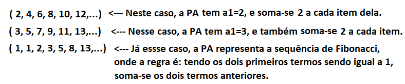
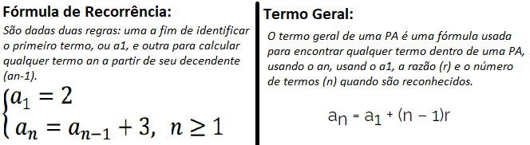
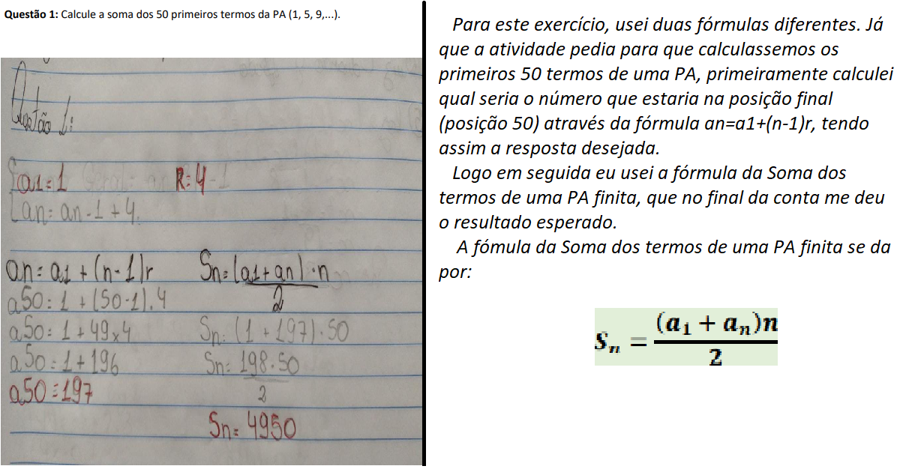
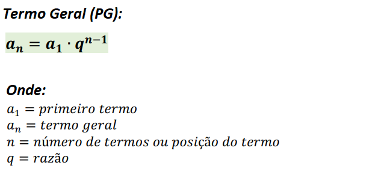
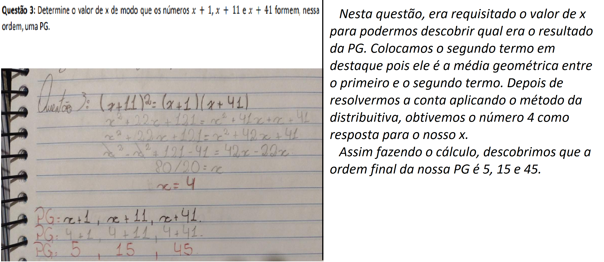

Conteúdos com Maior Aproveitamento
Nesta sessão do portifólio irei descrever quais foram os conteúdos que,
como indicado anteriormente, tive mais facilidade, e que mais gostei,
de aprender e fazer durante esse ciclo de APNP.
Para este portifólio, irei usar um sistema em que para cada conteúdo apresentado tenha
três itens principais: Conceito e uma Atividade realizada.
Progressão Aritmética (PA)
Conceito:
Progressão Aritmética (ou PA), por definição, é uma sequência numérica, partindo do conceito que toda a sequência é a sucessão de um termo somado com uma constante r, chamada também de razão. Veja a seguir alguns exemplos:

Para descobrirmos a que lei de formação uma PA obedece, podemos usar as seguintes fórmulas:

Atividade:
Para esta sessão, irei pegar uma atividade realizada da lista de exercício e usá-la como exemplo, tanto para falar como fiz ela, tanto como explicar mais um pouco do conteúdo.

Progressão Geométrica (PG)
Conceito:
Progressão Geométrica (ou PG), por definição, é também uma sequência numérica, partindo do conceito que toda a sequência é a sucessão de um termo que, apartir do segundo, é igual ao produto do termo anterior com uma constante q.
Classificação:
Dentro das progressões geométricas, temos algumas classificaçõs conforme a sequência de termos se comporta, algumas delas são:
- Crescente: Onde cada termo é maior que o anterior
- PG com termos positivos: q > 1
- PG com termos negativos: 0 < q < 1
- Decrescente: Onde cada termo é menor que o anterior.
- PG com termos positivos: 0 < q < 1
- PG com termos negativos: q > 1
- Crescente: Onde cada termo é maior que o anterior
- PG com todos os termos nulos: a1 = 0 e q qualquer
- PG com termos iguais e não nulos: a ≠ 0 e q = 1
- Alternantes: Onde cada termo tem sinal contrário ao do termo anteriori. Ocorre quando temos q menor que zero.
- Estacionárias: Somente o primeiro termo é diferente de zero: a1 ≠ 0 & q = 0.
Para a Progressão Geométrica também temos a fórmula do Termo Geral, mas desta vez dada pela fórmula:

Atividade:
